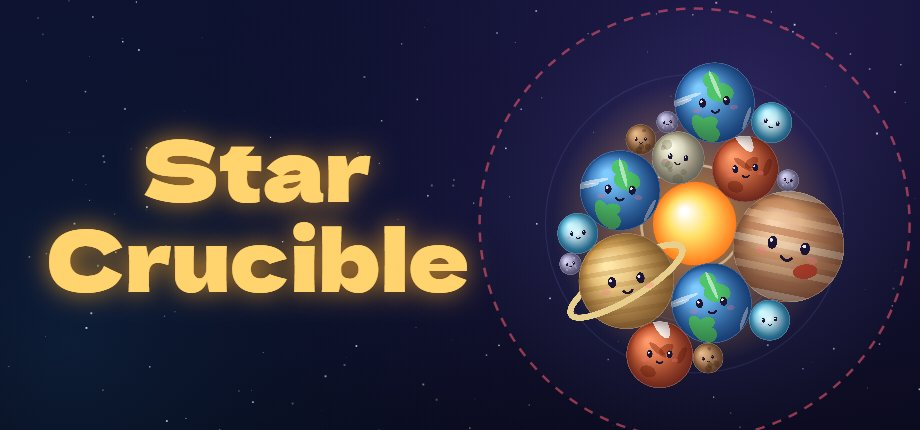
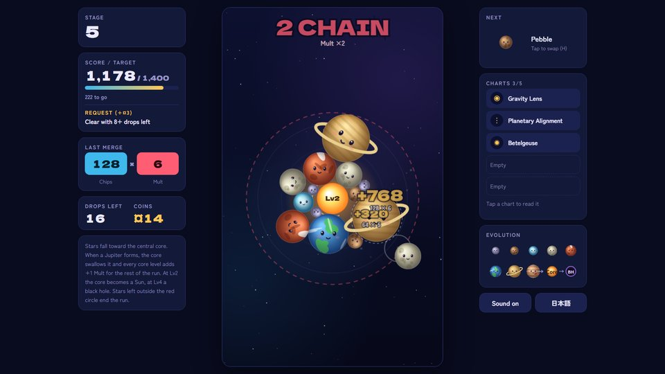
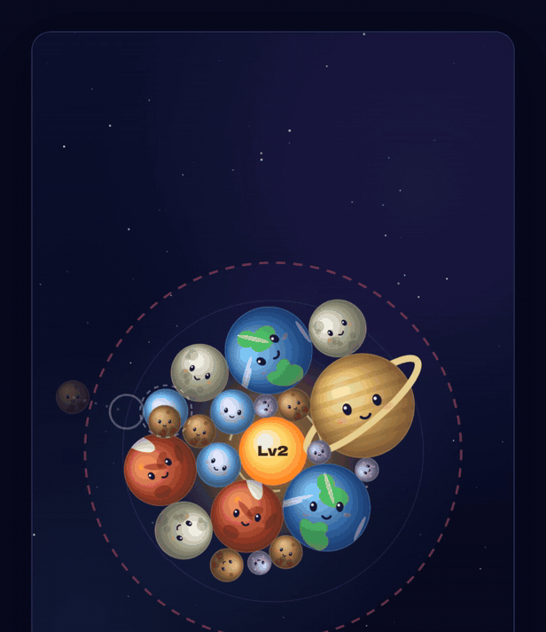
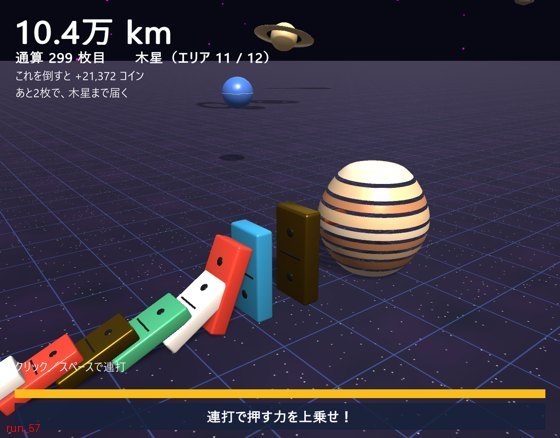

配信・取材の方へ
Humashi Labs の作品を取り上げていただける方向けの資料です。画像はこのページのものを自由にお使いください。
Press kit — streamers, creators and press are welcome. Feel free to use the images on this page.
配信・動画化のルール Streaming & video policy
当サークルのオリジナル作品は、配信・動画投稿を歓迎します。許可の連絡は要りません。広告収益・投げ銭などの収益化もできます。
概要欄などに作品名とストアへのリンクを書いていただけると助かります。体験版の範囲だけの配信も歓迎です。
You may stream and upload videos of our original games, including monetized content. No need to ask. A link to the store page in your description is appreciated. Demo-only videos are welcome too.
Need a key or have a question? Email us.
サークルについて Studio facts
- 名前 / Name
- Humashi Labs（DLsite サークル名：ふましー）
- 拠点 / Based in
- 日本 / Japan
- 体制 / Team
- 個人制作（生成AIを制作に使用。利用箇所は各ストアページに記載）/ Solo developer, AI-assisted (disclosed on each store page)
- 連絡先 / Contact
- humashilabs@gmail.com
- X
- @humashi_games
作品の資料 Games
星のるつぼ / Star Crucible
- ジャンル
- 物理パズル × ローグライク / Physics merge puzzle with roguelike runs
- 機種
- Windows（Steam）、ブラウザ体験版（itch.io・Stage 6 まで）
- 発売
- Steam 2027年3月予定（体験版は公開中）/ Steam: March 2027 (planned)
- 価格
- $4.99（予定）
- 言語
- 日本語・English・简体中文
- 1回の長さ
- 10〜30分。ステージの合間で中断して続きから遊べる / 10–30 min runs, quit between stages and continue later
- 操作
- マウス・タッチ・キーボード・ゲームパッド / Mouse, touch, keyboard, gamepad
- 体験版
- https://humashi.itch.io/star-crucible



ひと押し / Hitooshi
- ジャンル
- ドミノ倒しの育成ゲーム / Domino-toppling incremental game
- 機種
- Windows（Steam）
- 予定
- Steam Next Fest（2027年2月）に体験版で参加予定 / Demo at Steam Next Fest, Feb 2027 (planned)

ウィッチポット・ローグ
- ジャンル
- 調合ローグライト
- 機種
- Windows（DLsite）
- 言語
- 日本語
賽鬼夜行 ―さいきやこう―
- ジャンル
- 和風の賽ローグライト
- 機種
- Windows（DLsite）
- 言語
- 日本語・English
ねこ魔女サバイバー
- ジャンル
- サバイバー系アクション
- 機種
- Windows（DLsite）
- 言語
- 日本語